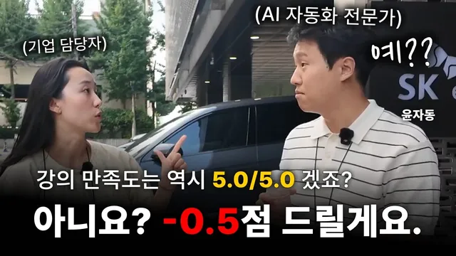

당황스럽네요

원본 영상 보기 →
- "몰라도 된다"는 사고 전환이 진입장벽을 없애줘요
- 비개발자가 실무 자동화를 직접 만드는 게 이미 현실이 됐어요
- AI가 컴퓨터 화면을 스스로 조작하는 단계까지 왔어요
한 줄 요약
전기차 충전 기업 SK일렉링크가 사내 직원들에게 AX(자동화) 교육을 진행한 현장을 담은 영상이에요. 교육 담당자와 마케팅 담당자가 코딩 경험 없이 직접 만든 실무 자동화 사례, 그리고 AI가 브라우저를 스스로 조작하는 라이브 시연이 함께 소개됩니다.
전체 내용 정리
SK일렉링크는 왜 사내 자동화 교육을 도입했을까요
SK일렉링크는 전기차 충전 인프라와 서비스를 제공하는 회사예요. 단순 충전을 넘어 앱 안에서 구독 모델 같은 서비스까지 붙여 그린 모빌리티 플랫폼으로 나아가려는 목표를 갖고 있습니다.
지난해 워크숍에서 "AI를 활용해 생산성을 두 배로 만들자"는 목표를 세웠는데요. 이를 실현하려면 자동화 교육이 먼저 필요하다는 판단이 섰다고 해요.
직원들이 진짜 판단이 필요한 업무에 더 집중하고, 단순하고 반복적인 업무는 자동화로 넘기자는 비전이었죠. 그래서 18년 차 자동화 전문가 윤자동(윤용승)을 강사로 초청해 교육을 진행했습니다. 참석자 대부분은 코딩 경험이 거의 없는 초보자였어요.
교육 담당자가 직접 만든 신청 폼 자동화
교육을 기획한 박은진 담당자는 반복 업무가 유독 많은 자리예요. 누가 어떤 날짜에 교육을 듣고 싶은지 접수받고, 리마인더와 메일을 보내고, 캘린더에 일정을 등록하는 일을 전부 수작업으로 처리해왔습니다.
이번 교육을 계기로 앱스크립트를 활용해 신청 폼을 직접 만들었어요.
교육 날짜 4개를 열어두고 각 날짜에 25명 정원을 설정해, 인원이 차면 해당 날짜가 폼에서 자동으로 사라지도록 했습니다. 신청을 완료하면 신청 완료 안내 메일이 자동으로 발송되고, 메일에서 확인 버튼을 누르면 신청자의 캘린더에 일정이 자동으로 등록돼요. 일정이 변경될 때도 전체 신청자에게 공지가 한 번에 자동 발송되고요.
AI가 스스로 브라우저를 조작하는 라이브 시연
윤자동은 강의 중 클로드가 크롬 브라우저를 직접 제어하는 모습을 실시간으로 보여줬어요.
사전에 어떤 페이지로 가야 하는지 알려주지 않았는데도, AI가 화면을 실시간으로 캡처하며 어느 메뉴로 들어가야 할지 스스로 판단해 수성대학교 홈페이지에서 편입학 모집 안내 페이지를 찾아 들어갔습니다.
파일을 내려받는 것은 물론이고요. 엑셀이나 워드 파일이면 로우 데이터를 분석해 대시보드를 만들고 분석 결과를 이메일로 보내는 것까지 AI 혼자 처리할 수 있다고 설명했어요.
이런 컴퓨터 제어가 가능해진 건 올해 5월부터입니다. 브라우저뿐 아니라 슬랙 같은 사내 메신저, ERP, 회사 내부 프로그램까지 컴퓨터상의 작업이면 거의 다 AI가 대신할 수 있는 수준이 됐다고 말했어요.
매일 한 시간씩 걸리던 40개 파일 합치기, 그리고 현타
윤자동이 예전 직장에서 겪었던 일화도 소개됐는데요. 공감하실 분이 많을 것 같아요.
매일 아침 전국 각 지점에서 메일로 보내온 실적 파일 40개를 하나하나 열어서, 드래그와 복사·붙여넣기로 하나의 로우 데이터 파일로 합쳐야만 수식을 걸고 피벗을 돌려 데일리 리포트를 만들 수 있었습니다.
이렇게 만든 리포트를 전국 센터와 경영진에게 매일 보고했는데요. 이 작업에만 매일 한 시간 이상이 걸렸고, 사람이 하다 보니 행 하나를 누락하는 실수도 생겨 실적이 잘못 집계됐다는 항의 전화를 받기도 했다고 해요.
이후 VBA로 40개 파일을 한 번에 합치는 도구를 만들었더니 클릭 한 번으로 1초 만에 끝났습니다. 그때 "내가 왜 지금까지 이 반복 업무를 하며 살았을까"라는 생각이 들었다고 하네요. 이 경험이 그가 자동화에 뛰어든 계기가 됐어요.
마케팅팀이 만든 대시보드와 자동 알림 시스템
마케팅팀의 이안 담당자는 프로모션과 리워드 프로그램을 기획·실행하고 있어요.
신규 회원이 어떤 채널로 유입되는지, 얼마나 꾸준히 증가하는지, 이탈이 발생하면 왜 이탈했는지까지 확인할 수 있는 데이터를 대시보드로 만들어 관리하고 있습니다.
대시보드가 없으면 이런 확인 작업에 커뮤니케이션 비용이 크게 드는데요. 시스템화해두니 체감되는 도움이 크다고 설명했어요. 긴급한 이슈가 발생하면 담당자에게 바로 알림이 가서 고객센터나 제조사 쪽으로 즉시 대응할 수 있는 구조도 만들어뒀고요.
이 외에도 절차가 복잡했던 재직증명서 발급을 앱스크립트로 만든 별도 포털로 해결했고, 입사 서류를 업로드하면 자동으로 같은 레이아웃의 PDF로 변환되는 도구도 직접 만들어 쓰고 있다고 합니다.
교육 이후 달라진 것들
이번 교육 전에도 사내에서는 "슬기로운 자동화 생활"이라는 스터디를 두 달 정도 운영했어요. 직원들이 각자 업무에 AX를 어떻게 적용하고 있는지 공유하고 피드백을 주고받는 자리였죠.
이번 교육에 참석한 한 직원은 이미 자동화 폼을 스스로 만들어왔고, 이 결과물로 사내 공모전에서 1위를 해 100만 원 상금을 받기도 했다고 해요.
교육 담당자는 직원들이 AI를 낯선 기술이 아니라 자연스러운 소통 도구로 인식하게 된 것이 가장 큰 변화라고 말했습니다.
참석자들의 만족도는 5점 만점에 4.5점이었고, 디자인 관련 실습이 하나 더 있었으면 좋았겠다는 의견이 아쉬운 점으로 나왔어요.
핵심 인사이트
- "몰라도 된다"는 사고 전환이 진입장벽을 없애줘요: 방법을 몰라도 AI에게 "이거 자동화할 수 있을까?"라고 질문을 던지는 순간부터 기술적인 부분은 AI가 함께 풀어줍니다. 비개발자가 자동화를 시작하는 데 필요한 최소 조건이 "문제를 정의하는 능력"으로 낮아졌다는 뜻이에요.
- 비개발자가 실무 자동화를 직접 만드는 게 이미 현실이 됐어요: 교육 담당자, 마케팅 담당자 모두 코딩 경험 없이 앱스크립트로 신청 폼, 대시보드, PDF 변환 도구를 스스로 만든 사례가 나왔다는 점이 이를 증명하죠.
- AI가 컴퓨터 화면을 스스로 조작하는 단계까지 왔어요: 사람이 지시하지 않은 메뉴까지 AI가 화면을 보며 스스로 판단해 클릭하고, 파일 다운로드부터 분석·이메일 발송까지 끝까지 처리하는 시연은 자동화의 기준점 자체가 달라졌음을 보여줍니다.
오늘 당장 해볼 것
- 매일 또는 매주 반복하는 파일 정리·취합·보고 작업을 하나 골라, ChatGPT나 Claude에게 "이 작업을 자동화할 수 있을까?"라고 그대로 물어보세요. 어떤 도구(구글 앱스크립트, Make, n8n 등)가 필요한지부터 확인하면 됩니다.
- 반복적인 접수·신청 업무가 있다면, 구글폼과 구글 앱스크립트로 인원이 차면 자동 마감되고 신청 완료 시 메일·캘린더가 자동 등록되는 구조를 만들 수 있는지 검토해보세요(박은진 담당자 사례를 참고 템플릿으로 삼으시면 좋아요).
- 회사나 주변에 이미 자동화 도구를 만들어본 사람이 있는지 찾아, 어떤 도구로 어떻게 만들었는지 5분만 물어보세요. 처음부터 혼자 해결하려 하지 않아도 됩니다.